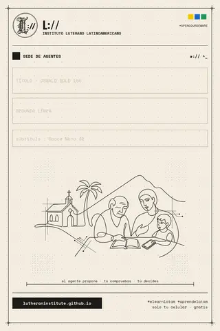
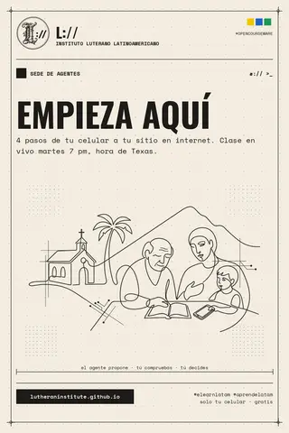
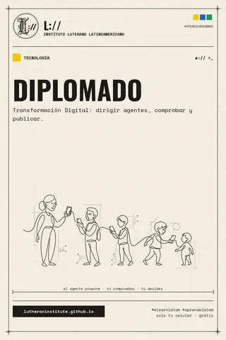
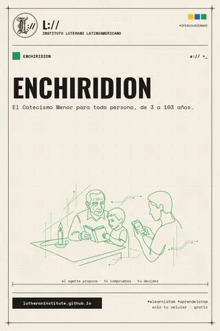

I+D InstitucionalInstitutional Research & Development
Aquí el Instituto investiga, prueba y publica en abierto. Todo lo que funciona se vuelve clase, plantilla o herramienta para la comunidad.
Where the Institute researches, tests and publishes in the open.
01Líneas de investigación
- Escuela de bajo ancho de banda
Aprender con solo un celular económico y datos limitados: páginas ligeras, modo ahorro y clases que funcionan sin computadora.
- Agentes con supervisión humana
El agente propone, tú compruebas, tú decides. Estudiamos cómo enseñar a dirigir agentes dejando evidencia de cada paso.
- Teología y tecnología
Cinco siglos de herencia educativa luterana al encuentro de la era agéntica: la Biblioteca Luterana y la Escuela de Teología LATAM.
- Enchiridion para toda persona
El Catecismo Menor de 3 a 103 años: formatos sencillos para aprenderlo y enseñarlo en casa.
- Cómputo local y soberano
Modelos pequeños que corren en el navegador o en tu propio equipo, sin renta de nube.
02Laboratorio abierto
03Colateral · Tumblr
Plantilla oficial para posts: 1280×1920, papel crema, sello L:// y el color de cada escuela. Toca una imagen para descargarla.








pip install pillow python3 tumblr_template.py post.png "TU TÍTULO" "tu subtítulo" ench # escuelas: sede · tech · teo · ench
EL AGENTE PROPONE · TÚ COMPRUEBAS · TÚ DECIDES
LA EVIDENCIA NO ES AUTORIDAD